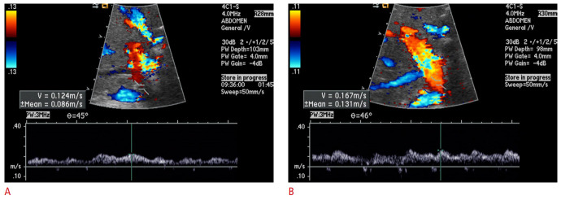
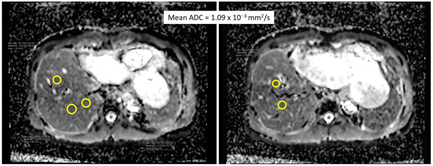
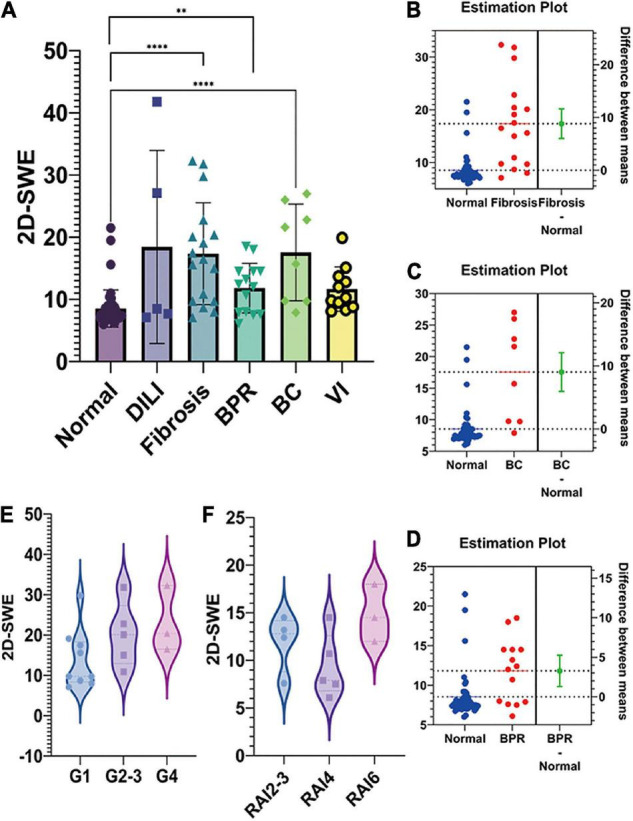
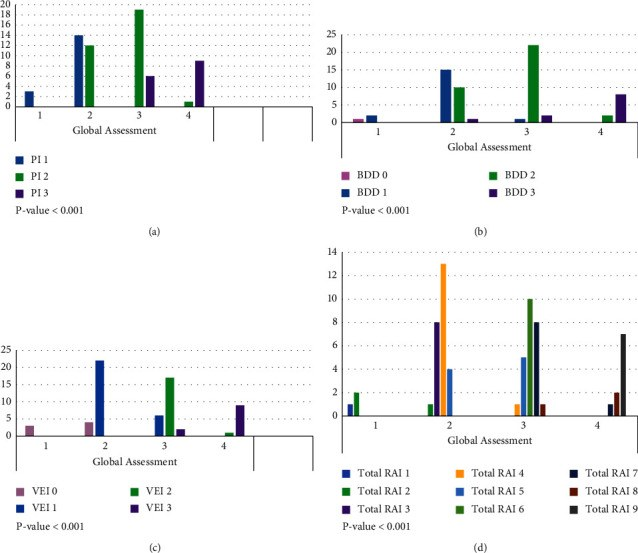

1916 — Thải ghép cấp tế bào (ACR/TCMR) sau ghép gan: phân độ Banff, khi nào sinh thiết, và vì sao siêu âm chỉ để LOẠI TRỪ / Acute cellular rejection after liver transplantation: Banff grading, biopsy indications, and why imaging only rules out
Tags: pattern:thai-ghep-cap pattern:thai-ghep-te-bao pattern:men-gan-tang pattern:gan-to pattern:phu-nhu-mo pattern:giam-ngam-tinh-mach pattern:viem-khoang-cua vung:gan vung:duong-mat vung:mieng-noi score:Banff-RAI score:ADC score:LSM protocol:Doppler protocol:CEUS protocol:MRI-DWI protocol:MRE protocol:MRCP protocol:sinh-thiet-gan
Mức chắc chắn (certainty): tổng hợp y văn (literature synthesis) — số liệu lấy từ các bài open-access đã đọc toàn văn: Agostini et al., J Clin Med 2023 (PMC10573382, CC BY 4.0 — tổng quan biến chứng sau ghép, ACR 15–25%, khởi phát 2–6 tuần); Dogan et al., J Int Med Res 2018 (PMC6136012, CC BY-NC 4.0 — 176 ca, 43 đợt ACR, yếu tố nguy cơ, đáp ứng corticoid); Eghtedari et al., J Transplant 2023 (PMC10070025, CC BY 4.0 — 90 mẫu sinh thiết, đối chiếu Banff 2016 global assessment với RAI); Choi et al., Ultrasonography 2023 (PMC10555689, CC BY-NC 4.0 — Doppler 84 ca ACR, PBV dự báo đáp ứng); Chiang et al., Diagnostics (Basel) 2024 (PMC11049147, CC BY 4.0 — DWI/ADC 25 ca, cutoff 1,133 × 10⁻³ mm²/s); Gu et al., Front Pediatr 2022 (PMC9363609, CC BY 4.0 — 2D-SWE 98 trẻ, LSM trong thải ghép); Schaapman et al., Liver Transpl 2025 (PMC11827683, CC BY-NC-ND 4.0 — 131 ca, điểm MRI–huyết thanh, AUC 0,70); Zeng et al., BMC Gastroenterol 2026 (PMC13185313, CC BY-NC-ND 4.0 — sinh thiết qua tĩnh mạch cảnh 22 trẻ); Babikir et al., Saudi Med J 2024 (PMC11463573, CC BY-NC 4.0 — vai trò siêu âm, ACR tới 40%); Si et al., Front Pediatr 2022 (PMC9203720, CC BY 4.0 — 640 trẻ, ACR muộn 6,4%/9,8%). Bài không có ca nguyên văn riêng của nhóm; ca 1–4 là ca nguyên văn/minh họa của các nguồn, ghi rõ Fig.
Câu hỏi gốc của bài: bệnh nhân ngày 9 sau ghép gan, ALT 210 U/L, bilirubin 3,2 mg/dL, không sốt; Doppler mạch gan và tĩnh mạch cửa bình thường, MRCP không giãn đường mật. Vậy: có nên điều trị "thải ghép" ngay bằng corticoid liều cao, hay phải sinh thiết? Và nếu sinh thiết ra RAI 5 thì nghĩa là gì — trong khi siêu âm hoàn toàn bình thường?
1. Tổng quan — vì sao ACR là chẩn đoán MÔ HỌC, và vì sao ảnh không thể "thấy" thải ghép
A. Bệnh học (pathology) và cơ chế:
- Định nghĩa: thải ghép cấp tế bào (acute cellular rejection, ACR) = thải ghép qua trung gian tế bào T (T-cell mediated rejection, TCMR); tổn thương nhắm vào biểu mô ống mật, nội mạc tĩnh mạch cửa và khoảng cửa. Đây là phản ứng miễn dịch thích ứng, khác thải ghép thể dịch (AMR) và khác thải ghép mạn (ductopenia/obliterative arteriopathy).
- Tần suất: 15–25% người nhận ghép gan (PMC10573382); có loạt báo tới 40% (PMC11463573); loạt 176 ca của Dogan có 36/176 (20,5%) người nhận, 43 đợt ACR (PMC6136012). Ở trẻ, ACR muộn (sau 1 năm) gặp 41/640 (6,4%) trong khoảng 1–2 năm và 63/640 (9,8%) sau 2 năm (PMC9203720).
- Thời điểm: ACR điển hình 2–6 tuần sau ghép (PMC10573382); trong loạt Dogan, 58,1% đợt xảy ra trong 3 tháng đầu, 65,1% trong năm đầu, trung vị 2 tháng (0–111 tháng) (PMC6136012). ACR muộn thường gắn với giảm liều/tuân thủ kém, DSA, hoặc nồng độ tacrolimus thấp (PMC9203720).
- Vì sao ACR thường "im lặng": phần lớn đợt ACR không có triệu chứng, chỉ tăng men gan/cholestasis; sốt, đau hạ sườn phải, vàng da là không đặc hiệu (PMC10573382; PMC11463573). Vì vậy không thể loại trừ ACR bằng "bệnh nhân thấy khỏe".
- Vì sao hình ảnh không chẩn đoán được: tổn thương ACR là viêm ở khoảng cửa và ống mật nhỏ — dưới độ phân giải của siêu âm/CT/MRI thường quy. Siêu âm không dùng để chẩn đoán thải ghép, mà để loại trừ nguyên nhân cơ học (hẹp/tắc động mạch, tĩnh mạch cửa, tĩnh mạch gan, hẹp đường mật) bắt chước ACR (PMC11463573). Đây là nguyên tắc trung tâm của bài.
- Vì sao RI cao muộn có thể gợi ý ACR: trong giai đoạn muộn sau ghép, RI tăng có thể phản ánh bệnh nhu mô (bao gồm thải ghép), vì phù/viêm làm tăng sức cản trong gan (PMC11794643). Nhưng RI tăng không đặc hiệu — xơ gan, viêm gan, tắc mật, chèn ép đều làm tăng RI.
- Vì sao DWI có thể "thấy" ACR: viêm làm tế bào trương phồng, giảm khoảng gian bào → hạn chế khuếch tán → ADC giảm. Nghiên cứu 25 ca (20 ACR: 10 nhẹ, 9 vừa, 1 nặng) cho thấy ADC ở ACR thấp hơn, tăng trở lại sau điều trị, AUC 0,92, cutoff 1,133 × 10⁻³ mm²/s, Se 80%/Sp 95%; ACR nhẹ 1,03 ± 0,07 vs vừa–nặng 0,92 ± 0,11 (p < 0,05) (PMC11049147).
- Vì sao 2D-SWE có thể gợi ý: viêm/phù làm mô cứng hơn. Ở trẻ, LSM bình thường sau ghép 7,5–8,5 kPa; thải ghép có bằng chứng mô học (BPR) trung vị 12,2 kPa, cao hơn nhóm hồi phục +3,283 ± 0,992 kPa (p = 0,0016); nhưng LSM không tương quan với độ nặng ACR cấp (PMC9363609).
- Vì sao Doppler có ích nhưng không chẩn đoán: PBV < 20 cm/s, RI < 0,5**, **phổ tĩnh mạch gan một pha** là các bất thường **có thể gặp** trong ACR; **PBV thấp sau điều trị** dự báo **đáp ứng kém** (50% vs 7,8%; Se 50%/Sp 92,2%/Acc 82,1%), và **PBV giảm > 10% cũng dự báo kém (Se 50%/Sp 79,7%/Acc 72,6%) (PMC10555689). Đây là tiên lượng, không phải chẩn đoán.
- Vì sao vẫn phải sinh thiết: mô học là tiêu chuẩn vàng; chỉ có mô học mới phân biệt ACR với viêm gan do thuốc, nhiễm CMV, tái phát bệnh, thải ghép thể dịch và cho phân độ Banff để quyết định corticoid đơn thuần hay ATG. Điểm MRI–huyết thanh (AUC 0,70, NPV 0,80) mới đủ để giảm bớt sinh thiết ở nhóm nguy cơ thấp, chưa thay thế sinh thiết (PMC11827683).
- Vì sao điều trị theo phân độ: corticoid liều cao giải quyết 79% đợt ACR; 7% chỉ cần chỉnh liều ức chế miễn dịch; 14% kháng corticoid phải dùng ATG (PMC6136012). Phân độ nặng (RAI 8–9) và thải ghép muộn có xu hướng kém đáp ứng hơn — vì vậy không điều trị mù.
B. Ngưỡng định lượng bắt buộc (cửa 1 Argon):
| Đại lượng | Con số đã kiểm chứng | Ý nghĩa thực hành |
|---|---|---|
| Tần suất ACR | 15–25% (PMC10573382); tới 40% (PMC11463573); 20,5% người nhận, 43 đợt (PMC6136012) | Bệnh cảnh thường gặp, không được bỏ qua |
| ACR muộn ở trẻ | 41/640 (6,4%) trong 1–2 năm; 63/640 (9,8%) sau 2 năm (PMC9203720) | Theo dõi lâu dài, không chỉ 3 tháng |
| Thời điểm | 2–6 tuần (PMC10573382); 58,1% trong 3 tháng, 65,1% trong năm đầu, trung vị 2 tháng (PMC6136012) | Nghĩ ACR khi men gan tăng tuần 2–12 |
| Banff RAI — thành phần | PI, BDD, VEI mỗi thành phần 0–3; tổng 0–9 (PMC10070025) | Ghi từng thành phần, không chỉ tổng |
| Banff RAI — nhóm | 1–2 không xác định; 3–5 nhẹ; 6–7 vừa; 8–9 nặng (theo cách nhóm của PMC10070025, sửa Banff 1997) | Quyết định corticoid vs ATG |
| Global assessment vs RAI | Tương quan mạnh với PI, BDD, VEI và tổng RAI (p < 0,001); dùng thay thế nhau (PMC10070025) | Có thể dùng global nếu trung tâm không chấm RAI |
| DWI/ADC | Cutoff 1,133 × 10⁻³ mm²/s; AUC 0,92, Se 80%/Sp 95%; nhẹ 1,03 ± 0,07, vừa–nặng 0,92 ± 0,11 (PMC11049147) | ADC thấp gợi ý ACR; tăng sau điều trị = đáp ứng |
| 2D-SWE ở trẻ | Bình thường sau ghép 7,5–8,5 kPa; BPR 12,2 kPa; chênh +3,283 kPa (p = 0,0016); không tương quan độ nặng ACR (PMC9363609) | LSM cao gợi ý, nhưng không phân độ |
| 2D-SWE — xơ hóa | Cutoff 10,3 kPa cho xơ hóa đáng kể; AUC 88% (PMC9363609) | Đừng nhầm xơ hóa với ACR cấp |
| Doppler — PBV | PBV < 20 cm/s là bất thường; PBV thấp sau điều trị ở 50% kém đáp ứng vs 7,8% đáp ứng tốt (PMC10555689) | Dùng theo dõi đáp ứng, không chẩn đoán |
| Doppler — dự báo kém đáp ứng | PBV thấp sau điều trị: Se 50%, Sp 92,2%, Acc 82,1%; PBV giảm > 10%: Se 50%, Sp 79,7%, Acc 72,6% (PMC10555689) | Sp cao → hữu ích để xác nhận thất bại, không để sàng lọc |
| Điểm MRI–huyết thanh | 131 ca, AUC 0,70, NPV 0,80; 62% có indeterminate/TCMR; 38% không thải ghép (PMC11827683) | Có thể tránh sinh thiết ở nhóm nguy cơ thấp, chưa thay thế |
| Sinh thiết qua tĩnh mạch cảnh ở trẻ | 22 trẻ, thành công kỹ thuật/lâm sàng 100%, biến chứng 4,5% (đau bụng nhẹ), không biến chứng nặng (PMC13185313) | Lựa chọn khi rối loạn đông/giảm tiểu cầu/cổ trướng |
| Đáp ứng corticoid | 79% đáp ứng methylprednisolone; 7% chỉnh liều; 14% kháng → ATG (PMC6136012) | 1/7 sẽ cần bậc thang điều trị |
| Yếu tố nguy cơ — biến chứng mật | OR 4,89 (2,00–11,98) (PMC6136012) | Luôn loại trừ hẹp/rò mật trước khi gọi ACR |
| Yếu tố nguy cơ — CMV D+/R− | OR 9,88 (1,18–82,36) (PMC6136012) | Tầm soát CMV khi ACR |
| Yếu tố nguy cơ — bất đồng giới | OR 3,16 (1,31–8,10); nữ cho + bất đồng giới OR 3,00 (1,10–7,58) (PMC6136012) | Gợi ý nguy cơ miễn dịch |
C. TẠI SAO ảnh trông như vậy (vật lý hình ảnh):
- Siêu âm B-mode: ACR không có dấu hiệu đặc hiệu; có thể gan to, nhu mô không đồng nhất, giảm âm do phù/viêm, nhưng phù mảnh ghép sau mổ, viêm gan, tắc mật cũng vậy. Vì vậy B-mode bình thường không loại trừ ACR.
- Doppler: RI = (PSV − EDV)/PSV. Trong ACR, phù/viêm khoảng cửa làm tăng sức cản → RI tăng; nhưng RI tăng cũng gặp ở xơ gan, tắc mật, chèn ép, thải ghép mạn. RI giảm < 0,5 gợi ý hẹp động mạch hoặc giãn mạch, không phải ACR.
- DWI/ADC: nước trong mô khuếch tán tự do → ADC cao; khi tế bào trương phồng/viêm → ADC thấp. Vì vậy ADC thấp là dấu hiệu gián tiếp của viêm, không phải "hình ảnh của tế bào T". Xơ hóa cũng làm ADC thấp; mỡ làm ADC cao; sắt làm tín hiệu thấp → ADC không tuyệt đối.
- 2D-SWE: đo vận tốc sóng biến dạng → mô cứng = LSM cao. Viêm/phù làm cứng nhưng ít hơn xơ hóa; vì vậy LSM 12 kPa có thể là ACR hoặc xơ hóa sớm — phải đọc cùng mô học.
- MRI/HBP: chức năng gan ( uptake gadoxetate ) và cT1 phản ánh viêm/xơ; điểm phối hợp MRI–huyết thanh có AUC 0,70 — đủ để sàng lọc, chưa đủ để chẩn đoán.
- Mô học: H&E thấy thâm nhiễm lympho khoảng cửa, viêm ống mật, viêm nội mạc tĩnh mạch; không thấy vi khuẩn/nấm, không có thể CMV; hóa mô miễn dịch (C4d, C3d) khi nghi AMR. Đây là bằng chứng trực tiếp, không phải suy đoán từ tín hiệu.
2. Mẫu hình + chẩn đoán phân biệt theo vị trí (Gamut)
Xếp theo bệnh cảnh lâm sàng và cái gì phải loại trừ trước:
- Mẫu A — ACR sớm điển hình (2–6 tuần): men gan tăng, bilirubin tăng nhẹ, không sốt; Doppler mạch bình thường, MRCP không giãn mật → sinh thiết; RAI 3–7 thường đáp ứng corticoid.
- Mẫu B — ACR muộn (> 6 tháng): sau giảm liều hoặc không tuân thủ; có thể âm thầm, men gan tăng nhẹ; nguy cơ xơ hóa/ductopenia nếu chẩn đoán muộn.
- Mẫu C — ACR + biến chứng mật: hẹp/rò mật là yếu tố nguy cơ (OR 4,89) và cũng bắt chước ACR; phải MRCP/ERCP trước/đồng thời.
- Mẫu D — ACR + CMV: CMV D+/R− (OR 9,88); sốt, giảm bạch cầu, men gan tăng; CMV DNA/pp65 và mô học.
- Mẫu E — ACR + EAD (suy mảnh ghép sớm): EAD là chẩn đoán sinh hóa (bilirubin ≥ 10 mg/dL hoặc INR ≥ 1,6 ngày 7, hoặc AST/ALT > 2.000 IU/L) và không loại trừ ACR; hai bệnh cảnh có thể chồng lấp (bài 1914).
- Mẫu F — ACR + hẹp động mạch: RI thấp, PSV tăng, tardus-parvus; ACR có thể gây viêm quanh mạch nhưng hẹp thực thể phải được loại trừ bằng CTA/DSA (bài 1913/1915).
- Mẫu G — viêm gan do thuốc: temporal relation với thuốc mới, eosinophilia, autoantibody; mô học có eosinophil nhưng không có viêm ống mật/nội mạc điển hình.
- Mẫu H — tái phát bệnh nền: PSC, autoimmune hepatitis, HCV; MRCP (PSC), autoantibody/IgG, mô học; không đáp ứng corticoid nếu là tái phát PSC.
- Mẫu I — nhiễm trùng/cholangitis: sốt, bạch cầu tăng, đường mật giãn; cấy máu/mật, kháng sinh; không điều trị corticoid mù.
- Mẫu J — PTLD: khối ổ khoảng cửa/hạch, có thể hẹp đường mật/động mạch; EBV DNA, sinh thiết; không nhầm với ACR lan tỏa.
3. Bảng so sánh phân biệt (ma trận đối chiếu)
| Thực thể (entity) | Hình ảnh điển hình | Chốt vào (rule-in) | Chốt loại (rule-out) | Gợi ý xác nhận |
|---|---|---|---|---|
| ACR/TCMR | Siêu âm thường bình thường hoặc gan to, nhu mô không đồng nhất; RI tăng ở giai đoạn muộn; ADC thấp, LSM cao | Sinh thiết: PI + BDD + VEI, RAI ≥ 3, sau khi loại trừ mạch–mật | Mô học không có viêm khoảng cửa/ống mật → không ACR | Sinh thiết; Banff RAI; theo dõi đáp ứng |
| ACR không xác định (indeterminate) | Hình ảnh không đặc hiệu; RAI 1–2 | RAI 1–2 + men gan tăng nhẹ | RAI 0 hoặc bệnh khác rõ | Sinh thiết lại sau 1–2 tuần nếu không cải thiện |
| EAD (suy mảnh ghép sớm) | Mạch–mật bình thường; có thể phù, ngấm không đồng nhất | Olthoff: bilirubin ≥ 10 mg/dL hoặc INR ≥ 1,6 ngày 7, hoặc AST/ALT > 2.000 IU/L | Mô học ACR dương → không chỉ là EAD | Sinh hóa ngày 1–7; sinh thiết nếu nghi |
| HAT/HAS | Mất dòng/PSV tăng, RI < 0,5, tardus-parvus; CTA khuyết thuốc/hẹp ≥ 70% | Bất thường Doppler + CTA/DSA | Mạch thông, RI bình thường | Doppler/CTA/DSA (bài 1913, 1915) |
| Hẹp miệng nối mật/ITBL | Giãn đường mật trong gan, hẹp tại miệng nối hoặc nhiều ổ trong gan; MRCP thấy rõ | Giãn mật + hẹp trên MRCP/ERCP | MRCP bình thường, không giãn | MRCP/ERCP; CEUS đường mật |
| CMV hepatitis | Hình ảnh không đặc hiệu; có thể gan to, tăng âm thô | CMV DNA dương/pp65 + thể CMV trong mô | CMV DNA âm, không thể CMV | CMV PCR; hóa mô miễn dịch |
| Viêm gan do thuốc | Không đặc hiệu; có thể gan to, phù | Thuốc mới + eosinophilia/autoantibody + mô học phù hợp | Không liên quan thuốc, không eosinophil | Ngừng thuốc thử; sinh thiết |
| Tái phát bệnh nền (PSC/AIH/HCV) | MRCP: hẹp nhiều ổ (PSC); AIH: không đặc hiệu; HCV: không đặc hiệu | MRCP/autoantibody/RNA virus + mô học | Không có dấu hiệu tái phát | MRCP, IgG/autoantibody, HCV RNA |
| Nhiễm trùng/cholangitis | Giãn đường mật, dày thành ống mật, có thể áp-xe | Sốt + bạch cầu tăng + cấy dương | Không sốt, cấy âm, không giãn mật | Cấy máu/mật; kháng sinh |
| PTLD | Khối khoảng cửa/hạch, có thể hẹp mật/mạch | EBV DNA + sinh thiết: tăng sinh lympho đơn dòng | Không khối, EBV âm | Sinh thiết; EBV PCR; PET/CT |

*Bệnh nhân 50 tuổi, ACR với RAI 8 vào ngày 8 sau ghép gan sống cho (mảnh ghép gan phải): (A) Doppler tại thời điểm chẩn đoán cho thấy vận tốc tĩnh mạch cửa thấp (0,124 m/s = 12,4 cm/s); (B) sau điều trị, PBV tăng lên 16,7 cm/s nhưng vẫn dưới 20 cm/s. Đây là ví dụ cho thấy Doppler thay đổi theo đáp ứng điều trị, nhưng không đủ để chẩn đoán ACR — chẩn đoán vẫn là mô học. Nguồn: Choi et al., Ultrasonography 2023;42(4):572–579, PMC10555689 Fig. 1, CC BY-NC 4.0.*4. Protocol chụp + phân độ Banff + ngưỡng xử trí
A. Theo dõi và chẩn đoán — thứ tự bắt buộc:
- Men gan (AST, ALT, ALP, GGT, bilirubin) và INR: theo lịch trung tâm; bất thường kéo dài > 1 tuần hoặc tăng > 2–3 lần ULN → đánh giá.
- Doppler + CEUS: loại trừ HAT/HAS, tắc tĩnh mạch cửa, hẹp dòng ra; ghi RI, PSV, PBV, phổ tĩnh mạch gan.
- MRCP (hoặc ERCP/PTC khi cần can thiệp): loại trừ hẹp miệng nối, ITBL, sỏi/bùn mật — đặc biệt khi bilirubin/ALP tăng trội.
- Siêu âm/CT bụng: loại trừ áp-xe, tụ dịch, biến chứng mạch; không dùng để chẩn đoán ACR.
- Sinh thiết gan: khi men gan tăng mà mạch–mật đã loại trừ, hoặc không đáp ứng điều trị. Percutaneous là chuẩn; transjugular khi INR > 1,5, tiểu cầu < 50 × 10⁹/L, cổ trướng nhiều — ở 22 trẻ, thành công 100%, biến chứng 4,5% (PMC13185313).
- Mô học: đọc PI, BDD, VEI, tính RAI, ghi global assessment; hóa mô miễn dịch khi nghi AMR; CMV khi có bất thường.
B. Phân độ Banff (RAI) và ý nghĩa:
| Thành phần | 0 | 1 | 2 | 3 |
|---|---|---|---|---|
| PI — viêm khoảng cửa | Không | Ít, vài khoảng cửa | Vừa, nhiều khoảng cửa | Nặng, lan ra tiểu thùy |
| BDD — tổn thương ống mật | Không | Ít tế bào viêm quanh ống mật | Nhiều tế bào, tổn thương biểu mô | Tổn thương nặng/hoại tử biểu mô |
| VEI — viêm nội mạc tĩnh mạch | Không | Ít, dưới nội mạc | Rõ, nhiều tĩnh mạch | Nặng, có thể hoại tử nội mạc |
- Tổng RAI 0–9: 1–2 không xác định; 3–5 nhẹ; 6–7 vừa; 8–9 nặng (theo cách nhóm của PMC10070025, sửa Banff 1997).
- Global assessment (nhẹ/vừa/nặng) tương quan mạnh với tổng RAI và có thể dùng thay thế (PMC10070025). Banff 2016 bổ sung viêm quanh tĩnh mạch và hoại tử quanh tĩnh mạch — đừng bỏ qua khi chấm điểm.
C. Ngưỡng xử trí:
| Tình huống | Hành động |
|---|---|
| Nghi ACR, mạch–mật chưa loại trừ | Không dùng corticoid mù; làm Doppler/CEUS + MRCP trước |
| RAI 1–2 (không xác định) | Theo dõi, sinh thiết lại 1–2 tuần nếu men gan không giảm; không tăng ức chế miễn dịch kéo dài |
| RAI 3–5 (nhẹ) | Methylprednisolone liều cao (người lớn 500 mg/ngày × 3 ngày; trẻ theo cân nặng/phác đồ trung tâm), rồi giảm liều |
| RAI 6–7 (vừa) | Corticoid liều cao; kiểm tra nồng độ tacrolimus, tuân thủ, DSA |
| RAI 8–9 (nặng) | Corticoid + cân nhắc ATG; sinh thiết lại nếu không đáp ứng |
| Không đáp ứng sau 48–72 giờ/1 tuần | Sinh thiết lại: phân biệt ACR kháng corticoid, AMR, nhiễm, tái phát bệnh; ATG/đổi phác đồ |
| ACR + biến chứng mật | Điều trị cả hai; không quy hết men gan cho ACR |
| ACR + CMV | Điều trị CMV song song; giảm ức chế miễn dịch có kiểm soát |
D. Sơ đồ quyết định:
flowchart TD
A[Men gan tang sau ghep gan] --> B[Doppler va CEUS: loai tru hep tac mach]
B --> C[MRCP hoac ERCP: loai tru hep duong mat]
C --> D{Da loai tru nguyen nhan mach mat}
D -->|Khong| E[Dieu tri nguyen nhan mach mat]
D -->|Co| F[Sinh thiet gan: phan do Banff]
F --> G{Tong RAI}
G -->|1-2| H[Khong xac dinh: theo doi va sinh thiet lai]
G -->|3-5| I[ACR nhe: corticoid lieu cao]
G -->|6-7| J[ACR vua: corticoid lieu cao]
G -->|8-9| K[ACR nang: corticoid + can nhac ATG]
I --> L{Dap ung sau 48-72 gio}
J --> L
K --> L
L -->|Khong| M[Sinh thiet lai, doi kiem soat mien dich, ATG]
L -->|Co| N[Giam lieu va theo doi]
5. Biến thể bình thường và cạm bẫy
A. Biến thể bình thường (normal variant):
- Men gan tăng nhẹ thoáng qua trong 24–48 giờ đầu sau tái tưới máu, rồi giảm nhanh — không phải ACR.
- RI > 0,8 trong 3 ngày đầu ở ~50% bệnh nhân do phù mảnh ghép, bình thường hóa ~ngày 4 — không phải ACR.
- Gan to nhẹ, nhu mô không đồng nhất ngay sau ghép do phù/tái tưới máu, tự hết.
- PBV thấp thoáng qua khi đói, thở sâu, chèn ép nhẹ — đo lại 2 lần, cùng điều kiện.
- Dịch quanh gan ít sau mổ — không phải áp-xe.
B. Cạm bẫy (pitfall):
- "Siêu âm bình thường nên không phải ACR": sai — ACR không có dấu hiệu hình ảnh đặc hiệu; siêu âm bình thường chỉ loại trừ được nguyên nhân cơ học lớn.
- Điều trị ACR mù khi chưa loại trừ hẹp mật: biến chứng mật OR 4,89; corticoid sẽ che triệu chứng và làm nặng nhiễm trùng.
- Bỏ sót CMV: D+/R− OR 9,88; ACR và CMV có thể cùng tồn tại; phải PCR/pp65.
- Chấm RAI mà bỏ qua viêm quanh tĩnh mạch: Banff 2016 nhấn mạnh perivenular inflammation/necrosis; bỏ qua sẽ đánh giá thấp độ nặng.
- Dùng ADC/LSM để "chẩn đoán chắc": cả hai không đặc hiệu; xơ hóa, mỡ, sắt, tắc mật đều thay đổi; cutoff từ nghiên cứu nhỏ không dùng đại trà.
- Sinh thiết một lần là đủ: sampling error và interobserver kappa 0–0,85 (PMC11827683); nếu mô học không khớp lâm sàng, sinh thiết lại.
- Coi "đáp ứng corticoid" là bằng chứng chẩn đoán: nhiều bệnh khác cũng giảm men gan với corticoid; chẩn đoán vẫn dựa vào mô học ban đầu.
- Quên ACR muộn: sau 1 năm vẫn có 6,4–9,8% ở trẻ (PMC9203720); không chỉ theo dõi 3 tháng.
- Satisfaction of search: thấy ACR trên mô học rồi không đọc mạch–mật; bệnh nhân có thể có cả hai.
6. Tự lượng giá — Blind Quiz
Ca 1 — Bệnh nhân 50 tuổi, ngày 8 sau ghép gan, ALT tăng; Doppler tĩnh mạch cửa 12,4 cm/s, mô học RAI 8.
- Hỏi: (1) PBV 12,4 cm/s gợi ý gì? (2) Doppler có chẩn đoán được ACR không? (3) RAI 8 nghĩa là gì và điều trị?
Bấm để hiện đáp án (findings + chẩn đoán)
- (1) PBV < 20 cm/s là bất thường, có thể gặp trong ACR do tăng sức cản nhu mô; nhưng không đặc hiệu.
- (2) Không — Doppler chỉ gợi ý/tiên lượng; chẩn đoán là mô học (RAI 8).
- (3) ACR nặng (RAI 8–9) → corticoid liều cao, cân nhắc ATG nếu không đáp ứng; kiểm tra nồng độ tacrolimus và tuân thủ.
- Nguồn: Choi et al., Ultrasonography 2023, PMC10555689 Fig. 1, CC BY-NC 4.0.
Ca 2 — Bệnh nhân nghi ACR, ADC trung bình 1,09 × 10⁻³ mm²/s.

- Hỏi: (1) ADC này nằm ở đâu so với cutoff? (2) Giá trị nào hỗ trợ ACR? (3) Sau điều trị, ADC thay đổi ra sao?
Bấm để hiện đáp án
- (1) 1,09 < 1,133 × 10⁻³ mm²/s → dưới cutoff, phù hợp hạn chế khuếch tán.
- (2) AUC 0,92, Se 80%, Sp 95%; ACR vừa–nặng có ADC thấp hơn (0,92 vs 1,03 ở nhẹ).
- (3) ADC tăng trở lại sau điều trị, gần mức không ACR → dùng theo dõi đáp ứng, không thay sinh thiết.
- Nguồn: Chiang et al., Diagnostics (Basel) 2024;14(8):807, PMC11049147 Fig. 1, CC BY 4.0.
Ca 3 — Trẻ sau ghép gan, LSM 12,2 kPa; có phải ACR nặng?

- Hỏi: (1) LSM bình thường sau ghép ở trẻ là bao nhiêu? (2) 12,2 kPa gợi ý gì? (3) LSM có phân độ ACR không?
Bấm để hiện đáp án
- (1) 7,5–8,5 kPa ở trẻ ghép gan có chức năng bình thường.
- (2) BPR trung vị 12,2 kPa, cao hơn nhóm hồi phục +3,283 kPa (p = 0,0016) → gợi ý thải ghép có bằng chứng mô học, nhưng không đặc hiệu.
- (3) Không — LSM không tương quan với độ nặng ACR cấp; xơ hóa (cutoff 10,3 kPa) cũng làm LSM cao. Cần sinh thiết.
- Nguồn: Gu et al., Front Pediatr 2022;10:918145, PMC9363609 Fig. 2, CC BY 4.0.
Ca 4 — Mô học ACR: đọc phân độ Banff.

- Hỏi: (1) ba thành phần của RAI? (2) tổng RAI 5 thuộc nhóm nào? (3) global assessment có thay thế RAI được không?
Bấm để hiện đáp án
- (1) PI (viêm khoảng cửa), BDD (tổn thương ống mật), VEI (viêm nội mạc tĩnh mạch) — mỗi thành phần 0–3.
- (2) RAI 5 = ACR nhẹ (3–5); điều trị corticoid liều cao.
- (3) Có — global assessment tương quan mạnh với tổng RAI (p < 0,001) và có thể dùng thay thế để mô tả độ nặng.
- Nguồn: Eghtedari et al., J Transplant 2023;2023:3103335, PMC10070025 Fig. 1, CC BY 4.0.
Bài liên quan chéo
- 1914 – Suy chức năng mảnh ghép sớm (EAD) & PNF — EAD là chẩn đoán sinh hóa, ACR là mô học; hai bệnh cảnh chồng lấp.
- 1913 – Hẹp & huyết khối động mạch gan sau ghép gan — loại trừ mạch trước khi gọi ACR.
- 1915 – Hẹp động mạch gan ở trẻ sau ghép gan — RI thấp/tardus-parvus khác với RI tăng của ACR.
- 133 – Hẹp miệng nối & cholangiopathy thiếu máu sau ghép gan — biến chứng mật OR 4,89 với ACR; phải loại trừ.
- 1909 – Hẹp–tắc tĩnh mạch cửa sau ghép gan — PBV thấp cũng gặp trong tắc cửa, không chỉ ACR.
- 1906 – Hẹp dòng ra tĩnh mạch gan sau ghép (HVOO) — ứ huyết làm gan to, men gan tăng, dễ nhầm ACR.
- 1910 – Hội chứng tắc xoang gan (SOS/VOD) — ngấm không đồng nhất không do ACR.
Ảnh
- 4 ảnh, tải từ PMC CDN của bài open access, không chỉnh sửa pixel; nguồn + giấy phép từng file trong
images/CREDITS.md. - Tên file:
1916_<nội dung>_<Modality>_PMCxxxxx-fN.jpg; không tạo ảnh ghép (ảnh Doppler, bản đồ ADC, biểu đồ SWE và biểu đồ Banff — khác modality, không cùng chuỗi xung). - Ảnh không tải: Radiopaedia (chỉ dẫn link), AuntMinnie (chỉ dẫn link), các bài không rõ giấy phép — xem
sources.md.
Không dùng để chẩn đoán độc lập khi chưa có người hướng dẫn.